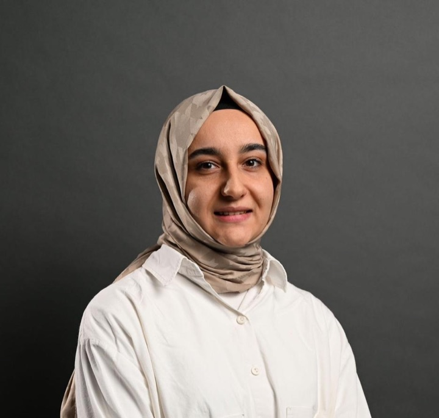
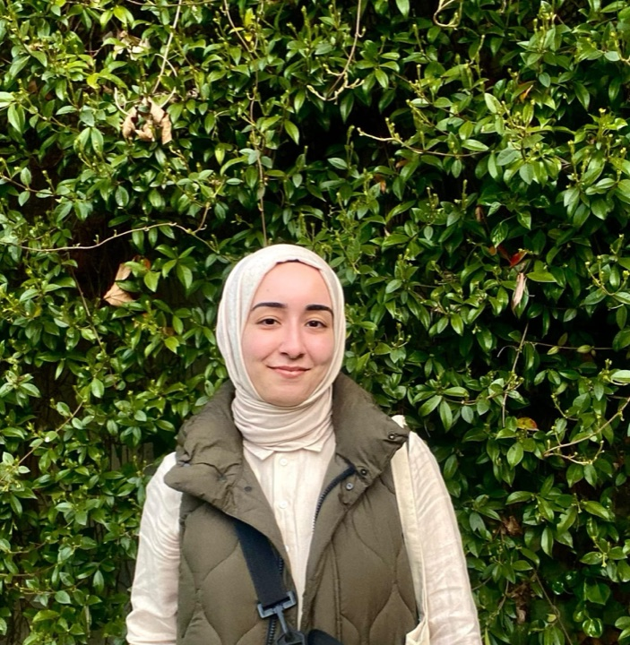
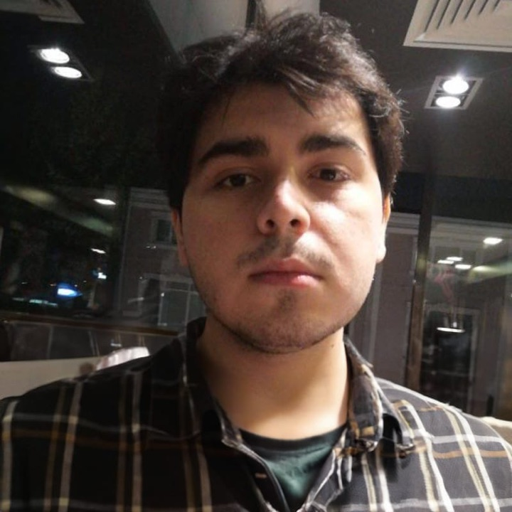
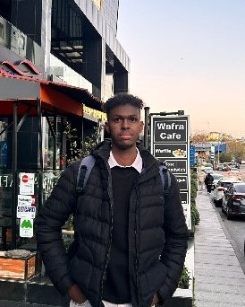
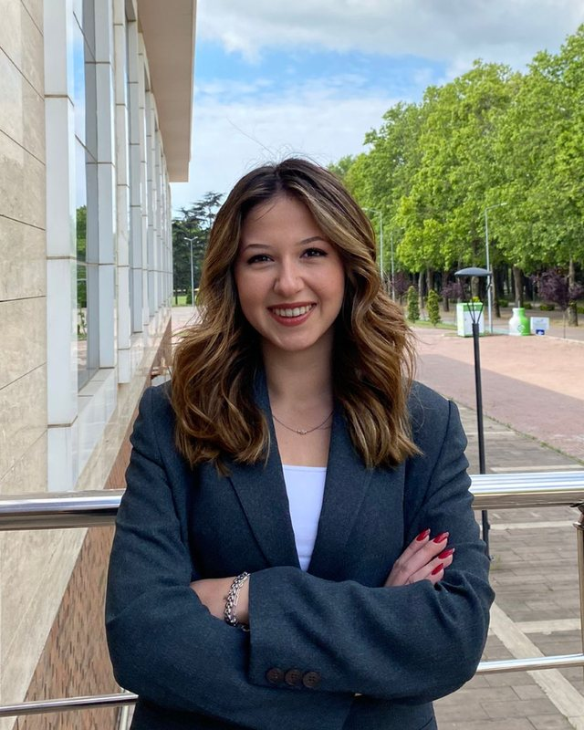
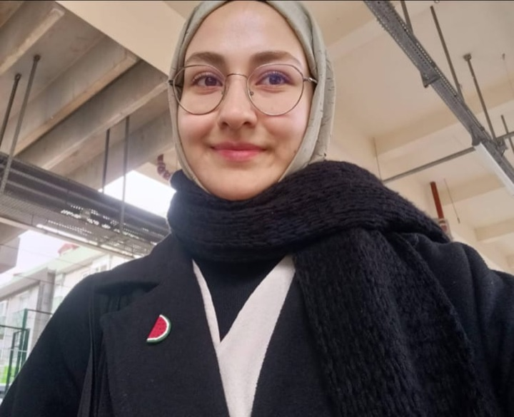
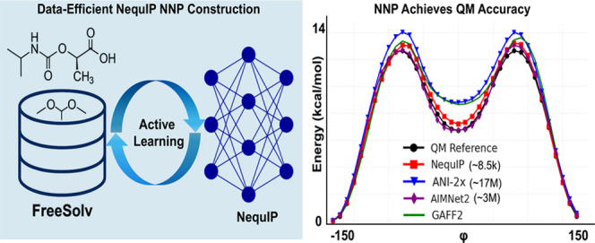
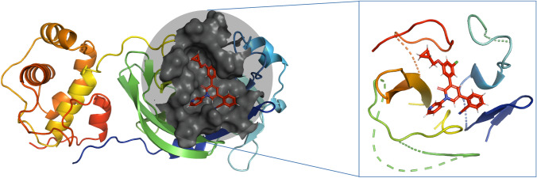
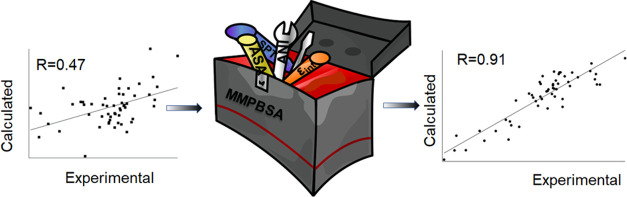

Lab leader · Principal Investigator
Assoc. Prof. Abdulkadir Koçak
Physical chemistry, quantum chemistry, computational chemistry, molecular dynamics and free energy.
- Citations
- 547
- h-index
- 16
- Publications
- 37
Department of ChemistryGebze Technical University
Computational chemistry at Gebze Technical University: molecular dynamics, free energies and machine-learned potentials, from small-molecule spectroscopy to drug design.
New preprint on bioRxiv: collinearity of decomposed energy terms in MM-P(G)BSA binding free energy calculations of protein–protein complexes.
G-NequIP, led by PhD student Esma Mutlu, extends data-efficient equivariant neural network potentials across diverse organic chemical space.
Our data-efficient equivariant NNPs for DFT-accurate simulations and implicit solvation free energies appear in The Journal of Physical Chemistry B.
DeepConf, which uses ANI-ML potentials to explore local minima and bioactive conformations, is published in Journal of Chemical Information and Modeling.
Modellab is a research laboratory in the Department of Chemistry at Gebze Technical University. Headed by Assoc. Prof. Abdulkadir Koçak, our team is dedicated to advancing scientific understanding through computational chemistry.
We combine molecular dynamics, quantum chemistry and neural network potentials to compute binding and solvation free energies, explore conformations of drug-like molecules and study how proteins recognise their ligands.
Lab leader · Principal Investigator
Physical chemistry, quantum chemistry, computational chemistry, molecular dynamics and free energy.






| Name | Degree | Year | Now at |
|---|---|---|---|
| To be added | — | — | — |
| Name | Role | Years |
|---|---|---|
| To be added | — | — |
Vibrational and electronic spectroscopy of metal-ion complexes such as Co+(H2O) and Cu+(CH4)n, and calculations that support experimental work on fluorescent probes, phthalocyanines and Schiff-base complexes.

Data-efficient neural network potentials, from ANI to E(3)-equivariant NequIP models, that reach DFT accuracy at a fraction of the cost. We apply them to solvation free energies of small molecules, conformer search and gas adsorption in metal–organic frameworks.

Docking, molecular dynamics and end-state free energies for drug discovery. Used as a rescoring function, ANI potentials rank in the top five of 34 scoring functions on CASF-2016; with GOLD docking and MD they screened FDA-approved drugs against the SARS-CoV-2 main protease.

More accurate binding free energies from end-state simulations. Replacing MM terms with ANI-ML potentials raises MMPBSA’s correlation with experiment from 0.48 to 0.90, and our ANI-based LIE method reaches R = 0.87–0.88 on 54 protein–ligand complexes.
Exploring potential Plasmodium kinase inhibitors: a combined docking, MD and QSAR study
Journal of Biomolecular Structure and Dynamics 42 (17), 8958–8968
Journal of Biomolecular Structure and Dynamics 42 (13), 6892–6903
Computational analysis of substrate recognition of SARS-CoV-2 Mpro main protease
Computational Biology and Chemistry 107, 107960
We welcome students who want to work on molecular simulation, free-energy methods and machine-learned potentials.